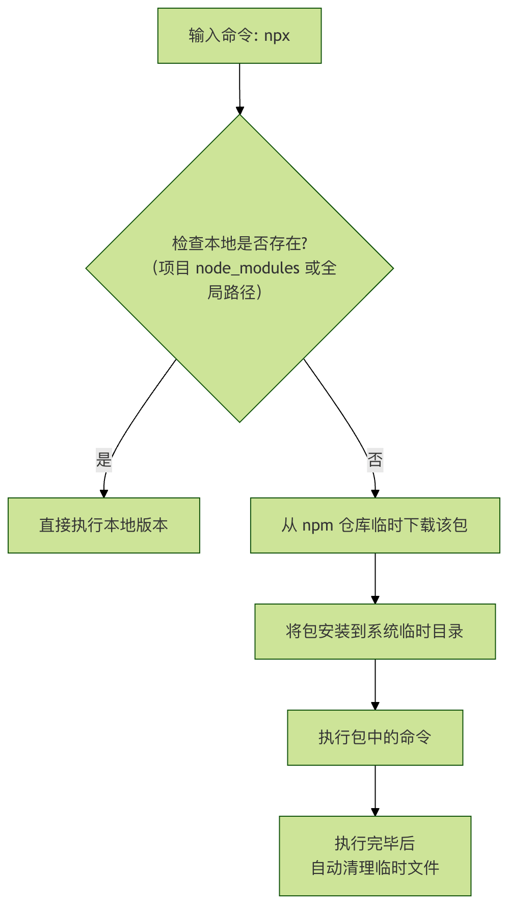

npx入門チュートリアル
JavaScript や Node.js を学び始めたばかりなら、おそらくすでに触れたことがあるでしょう
npmさまざまなツールやライブラリをインストールするために使われているでしょう。時には、あるツールをすばやく実行して効果を確認したいだけで、グローバルインストールしたくないこともあるでしょう？もう一つ、プロジェクトごとに異なるバージョンのコマンドラインツールが必要な場合、グローバルインストールでは常に競合が発生してしまうのでは？
npxまさにこれらの問題を解決するために生まれた強力なツールです。
npxnpm 5.2.0 で導入されたコマンドラインツールで、グローバルインストールせずに npm パッケージを実行できます。
簡単に言うと、npx は Node.js パッケージを実行するための便利なツールです。その核となる設計思想は次のとおりです：恒久的にインストールせずに、一時的に使用できる。
わかりやすい例え
あなたの家の工具箱を想像してみてください：
- npmまるであなたの工具倉庫の管理者のようなものです。あなたが
npm install -g some-toolときは、管理者にこう伝えるのと同じです：このツールを買ってきて、永遠に家のガレージ（グローバル環境）に置いておいてください、と。 - npxは、まるで即時お使いサービスのようなものです。あなたが
npx some-toolときは、お使いのお兄さんにこう頼むのと同じです：どこかでsome-toolを探してきて一度使ってみて、使い終わったら返して、家に置かないで、と。
使えばnpx、npm レジストリの任意のパッケージを、あらかじめコンピューターにインストールしなくても実行できます。
| 従来の課題 | npx の解決方法 |
|---|---|
| グローバルインストールが必要 | 直接実行 |
| バージョン競合 | 毎回指定バージョンを使用 |
| 環境の汚染 | 使い終わったらクリーンアップ可能 |
| ローカルコマンドが見つけにくい | 自動検出 |
なぜ npx を使うのか？
1. グローバルパッケージの汚染とバージョン競合を解決する
在 npx登場する前、コマンドラインで例えばcreate-react-app、vue-cliといったスキャフォールドツールを使いたい場合は、まずそれをグローバルインストールする必要がありました：npm install -g create-react-app。
これには2つの問題がありました：
- グローバル環境の汚染：インストールしたパッケージが、長期間使わなくてもディスク領域を占有し続けます。
- バージョン競合：2つのプロジェクトを開発していて、一方が
create-react-app@3、もう一方がcreate-react-app@5、グローバルインストールでは1つのバージョンしか保持できず、そのためどちらかのプロジェクトが正常に動作しなくなります。
npxはバージョンを直接指定して実行でき、使い終わったらすぐに消えるため、これらの問題を完全に回避できます。
2. プロジェクトにローカルインストールされたパッケージを簡単に実行する
プロジェクトディレクトリ内で、あなたがnpm install some-cli-toolでインストールしたパッケージは（node_modules/.bin/ディレクトリ配下）、通常は複雑なパスまたは npm scripts を通じてのみ呼び出せます。しかしnpxは、現在のプロジェクト内のローカルバージョンをインテリジェントに優先して使用するため、呼び出しが非常に簡単になります。
3. 安全かつ手軽に新しいツールを試す
新しくリリースされたコマンドラインツールを試したいなら、直接npx new-cool-toolで試してみましょう！もし合わなければ、コンピュータに何の痕跡も残しません。
npx の動作原理
あなたがnpx <command>を実行すると、npx は次のロジックに従ってコマンドを探して実行します：

このプロセスはユーザーにとって完全に透過的であり、ただその便利さを享受すればよいのです。
npx の使い方
環境準備
Node.js のバージョンが 5.2.0 以上であることを確認してください。以下のコマンドで確認できます：
node --version npm --version # 如果 npm 版本 >= 5.2.0，npx 就已经可用了 npx --version
基本構文
npx [选项] <命令>[@版本] [命令的参数...]
よく使うオプションとパラメータの説明
| オプション | 正式名称 | 説明 |
|---|---|---|
--no-install |
npx がローカルに存在するパッケージのみを使用するように強制し、ローカルにない場合はエラーを出してダウンロードしません。 | |
--ignore-existing |
ローカルに存在するパッケージを無視し、強制的にリモートから最新バージョンをダウンロードします。 | |
-p, --package <包名> |
インストールするパッケージを指定します。複数のパッケージを同時に使う必要がある場合に非常に便利です。 | |
-c <命令字符串> |
を使用して-p複数のパッケージを指定した場合は、-cで npx に実行する具体的なコマンドを伝えます。 |
|
--yes |
プロンプトが表示されることが分かっている場合（create-react-app が続行するか尋ねる場合など）に、自動的に「yes」と回答します。 |
実践的な使用例
いくつかの具体的な例を通して、npxがどのように力を発揮するかを見てみましょう。
例1: 一回限りのコマンドを実行する（最も一般的なシナリオ）
あなたはcowsayという面白い小さなツールを使って、ターミナルで牛に話させたいが、インストールはしたくないとします。
ステップ1：npx を直接使って実行
npx cowsay hello
コードの説明：npxはローカルにcowsayがあるか確認し、なければ npm から自動的にダウンロードし、コマンド実行後に自動でクリーンアップします。
期待される実行結果：
npx cowsay hello
Need to install the following packages:
cowsay@1.6.0
Ok to proceed? (y) y
_______
< hello >
-------
\ ^__^
\ (oo)\_______
(__)\ )\/\
||----w |
|| ||
ステップ2：バージョンを指定して実行特定のバージョンを使いたい場合：
npx cowsay@1.4.0 hello1.4.0
出力：
____________
< hello1.4.0 >
------------
\ ^__^
\ (oo)\_______
(__)\ )\/\
||----w |
|| ||
例2: スキャフォールドを使ってプロジェクトを作成する
React プロジェクトの作成を例にします：
従来の方法（もう使用は推奨されません）：
npm install -g create-react-app # 全局安装 create-react-app my-app # 使用
このインストール方法の問題点：
- グローバルに大量のツールをインストール
- バージョンが混乱する
- パソコンがどんどん肥大化する
現代の方法（npx を使用）：
npx create-react-app my-app
コードの説明：npxは一時的に最新版のcreate-react-appを取得し、それでプロジェクトの骨組みを作成します。完了しても、create-react-appをあなたのグローバル環境に残すことはありません。次回プロジェクト作成時も、最新版を取得します。
例3: プロジェクトのローカルツールを実行する
あるプロジェクトにwebpackを開発依存関係としてインストールしたとします（npm install webpack --save-dev)。
従来の呼び出し方（面倒）：
# 需要输入冗长的路径
./node_modules/.bin/webpack --version
# 或者在 package.json 中配置 scripts
# "scripts": { "build": "webpack" }
# 然后运行
npm run build
npx を使う方法（非常にシンプル）：
npx webpack --version # 或直接运行构建 npx webpack
コードの説明：npxはインテリジェントに、プロジェクトのnode_modules配下のwebpackを優先的に見つけて実行します。
例4: GitHub のスクリプトを実行する
npxGitHub gist やリポジトリ内のコードを実行することもできます。
npx https://gist.github.com/username/abcdefg
インターネット上の未知のコードを実行する場合、セキュリティリスクがあることに注意し、必ず信頼できるソースかどうかを確認してください。
npx の中核となる3つの機能
1、あらゆる npm パッケージを直接実行する
一般的な形式：
npx 包名
例：
npx cowsay hello
はコマンドライン上の小さな牛 🐮 を直接実行します
2、プロジェクトのローカル依存関係を実行する
多くのツールはプロジェクト内にのみインストールされています：
npm install vite
以前はこうしていました：
./node_modules/.bin/vite
今は：
npx vite
ローカルの実行可能ファイルを自動的に見つけてくれます
3、最新バージョンで実行する（システムを汚さない）
npx create-next-app@latest my-app
常に最新版のスキャフォールドを使用
グローバルツールをアップグレードする必要がない
最も一般的な npx の使用シーン
プロジェクトの作成
npx create-react-app my-app npx create-next-app npx vue-cli create my-vue npx degit user/repo
一時的なツール
npx eslint . npx prettier --write . npx serve .
開発サーバーの起動
npx vite npx nodemon app.js
上級テクニックと注意点
1. 複数のパッケージを組み合わせて使用する
1つのコマンドが複数のパッケージに依存する場合があります。例えば、あるディレクトリでシンプルな HTTP サーバーを起動し、同時にbrowser-syncを使ってライブリロードを実現したいとします。あまり一般的ではありませんが、npxで実現できます：
npx -p http-server -p browser-sync -c 'http-server & browser-sync start --proxy "localhost:8080" --files "**/*"'
コードの説明：
-p準備する必要があるパッケージを指定します。-c実行する完全なコマンド文字列を指定します。
2. 注意点
- ネットワーク接続：あるパッケージを初めて実行するときは、ネットワークからダウンロードする必要があり、速度はネットワーク環境に依存します。
- セキュリティ：
npx自動的にコードをダウンロードして実行します。信頼するソースとパッケージのみを実行してください。 - 一時ディレクトリ：ダウンロードしたパッケージはオペレーティングシステムの一時ディレクトリに保存され、システムによって定期的に削除される可能性があります。
クリックしてノートを共有
<p style="font-size:14px;">ノートはこの記事の内容を拡張したものである必要があります！</p><br> <p style="font-size:12px;"><a href="../tougao.html" target="_blank">記事の投稿はこちらをクリック</a></p> <p style="font-size:14px;"><a href="../w3cnote/runoob-user-test-intro.html" target="_blank">登録招待コードの取得方法</a></p> <h3 class="text-muted"><i class="fa fa-info-circle" aria-hidden="true"></i> ノートを共有する前に<a href=";.html" class="runoob-pop">ログイン</a>が必要です！</h3> <p><a href="../w3cnote/runoob-user-test-intro.html" target="_blank">登録招待コードの取得方法</a></p>